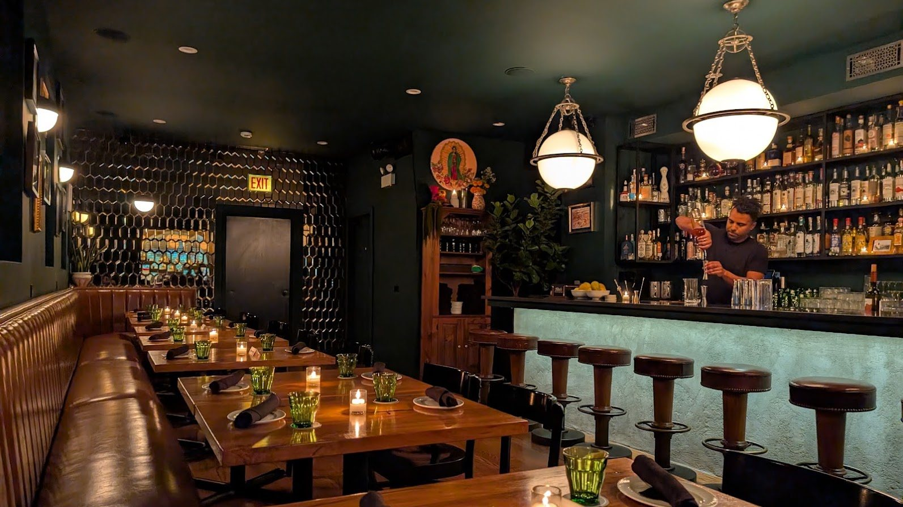
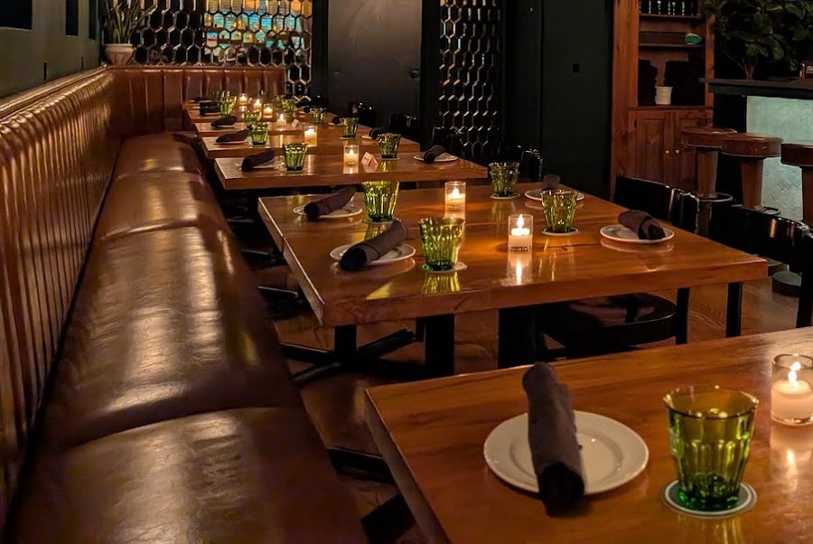
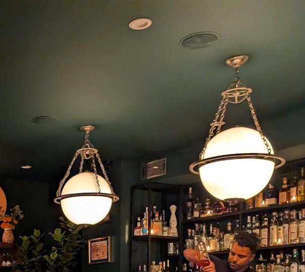

Birria Taco
$7Goat, raddish, cebolla y cilantro. A whole animal, a very long braise.
Family recipe
Est. on this block · Pilsen, Chicago
A contemporary cocktail bar & Mexican-American kitchen in a building that pre-dates the Chicago Fire. Low light, loud family recipes, and a bar that doesn’t cut corners.

Our story, our block
Cerdito Muerto is a contemporary cocktail bar & Mexican-American kitchen in Pilsen. It’s the brainchild of a first-generation Mexican-American kid who grew up on this very street, in this very space.
It’s the second iteration of a family business & beloved community gathering spot — formerly known as The Poolhall & Tacos Palacio. The building pre-dates the Chicago Fire and has been Mexican-owned for three generations. This place means a lot to us, and we hope you can feel it when you’re here.

Signature
Goat, raddish, cebolla y cilantro. A whole animal, a very long braise.
Family recipeMarinated, roasted, served sans piña. Cebolla y cilantro. Spicy.
Mom’s recipeSix to an order. Frijoles, citrus salad, mint.
Para compartirShrimp, habanero, peach, pepino, avocado. Served chilled.
Raw barDouble patty of dry-aged prime beef, chorizo, chihuahua, curtido.
SmashedU.S.D.A. prime, 14 oz. Friday and Saturday only.
Weekends onlyHours & contact
Feel free to walk in without a reservation. We offer first-come, first-served seating alongside our reserved seating. Keep in mind we’re a small space — about 30 seats — and can’t accommodate standing room at the bar once it’s full. Walk-ins need their entire party present to be seated.
Hours
Location & contact
Address1700 S. Halsted St.
Chicago, IL 60608
Phone — call or text312.933.9168
General enquiriesinfo@cerditomuerto.com
Parties of 6+reservations@cerditomuerto.com

Reservations
We’re on Resy. Grab a seat in the dining room or pull up to the bar.
Parties of 6 or more should email reservations@cerditomuerto.com to reserve. Deposit required — please plan ahead and allow 48 hours for a response. Remember: walk-ins are always welcome, reservations are not required.